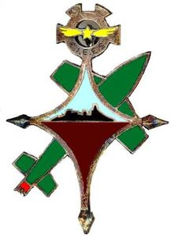

Space Code

L’astronomie est considérée comme la plus ancienne des sciences dans le monde. Auparavant
elle consistait principalement à mesurer la position des étoiles et des planètes dans le ciel. Plus
tard est venu la mécanique céleste c’est-à-dire de prévoir le mouvement des corps céleste avec
la mathématique, il faisait tout cela a la main mais maintenant tout cela est automatisée avec les
ordinateurs. Maintenant depuis le vingtième siècle l’astronomie se sépare en 2 disciplines,
l’astronomie d’observation et l’astrophysique théorique. L’astrophysique est une branche de
l’astronomie qui détermine les phénomènes physiques du a l’observation des astres.
De l’astronomie nous avons tiré l’astronautique qui est le fait d’envoyer dans l’espace un
véhicule habiter ou non, afin d’explorer et de voir réellement les mouvements des planètes
calculer au préalable. Pour pouvoir pratiquer l’astronautique des bases de lancement ont été
mises en place dans le but de lancer les fuser dans l’espace, c’est pour cela que nous avons créé
notre site afin de pouvoir vous montrer plus en détail les trois plus grand base de lancement. En
générale une base de lancement est composée d’un ou plusieurs ensembles de lancement, partie
de la base de lancement ou on prépare un lanceur de façon autonome, des aires de lancement,
des moyens de sauvegarde en cas d’incident et d’une salle de contrôle. Il est nécessaire d’avoir
plusieurs conditions à l’implantation d’une base de lancement, il faut une grande étendu de
terrain dépeuplée en cas de retomber de la fusée, il faut être près de l’équateur sa facilite le
lancement de la fuser. Tous ces éléments constituent une bonne base de lancement durable.
Trois des Plus grandes base
